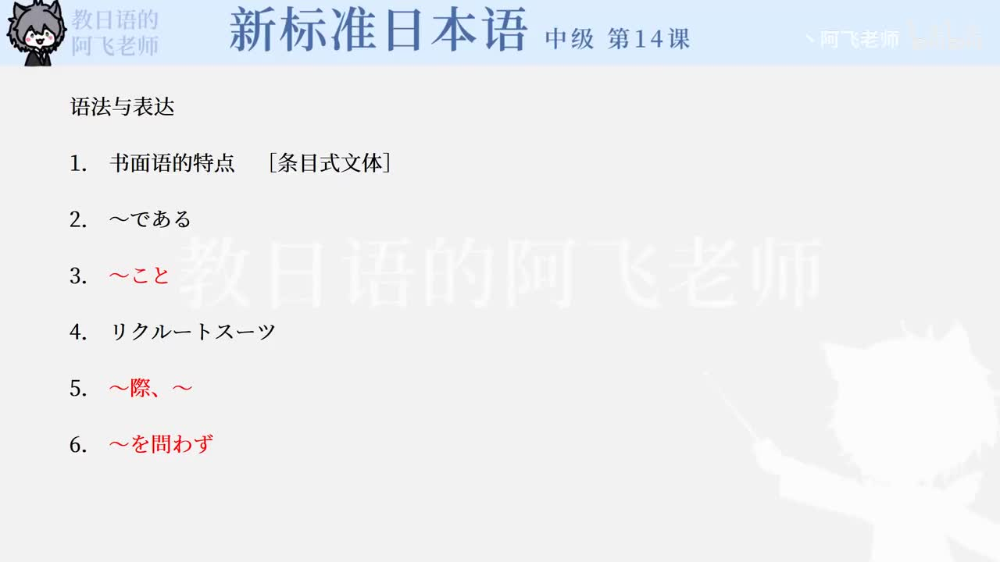

Bilibili P166 · Text
日本の就職活動
用面试指南和说明文学习日语里“定义、范围、让步否定、流程列举、之后才”的表达方式。
全篇听力精讲
按 5 段课文轮播。每段依次播放日语原文、平假名、中文意思、结构拆解和语法重点。
课程地图
面试不是朗读履历书内容不能照读；态度和第一印象都进入评价范围。
定义求职套装用「というのは」「際」「を問わず」说明リクルートスーツ。
就业并不轻松用「といっても」「わけではない」「しか〜ない」说明现实难度。
申请与考试流程选择公司、报名、参加多轮考试，突破之后才得到内定。
逐句精读
语法速记
同类词与搭配
练习与复习
来源说明：视频标题、时长、CID 和首帧来自 Bilibili 公开视频接口；课文内容依据本地《新标日中级上册》第14课「日本の就職活動」整理。